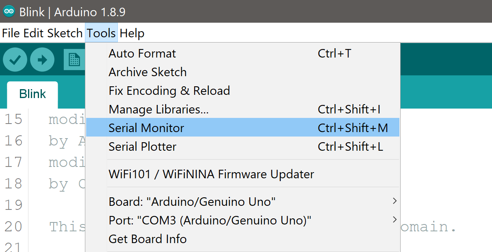

Trouble Shooting your Arduino
Before looking here check out the connections page and the components to better understand the various parts.
What is the problem?
There may be a problem in any of the components that your solution has, namely:
- Your PC to Arduino board connection
- The code you are running on the Arduino board
- The electronic components and their connections (NOT covered here)
Check the COM Port
Check the COM port in your Arduino IDE is correct.
Note: COM port can be any number 1 to 256, however it is usually under 10 - e.g. COM3 or COM4.
Selecting the right COM port
Within the Arduino IDE select Tools -> Port:

Adding Serial Debug Code
The following code will show you that your code is being executed on the Arduino board.
/* Setup */
void setup() {
// Start recording text at the Serial Monitor
Serial.begin(9600);
...
}
// the loop function runs over and over again forever
void loop() {
// The following line will write to the Serial Monitor
Serial.println("Turn the light ON...");
digitalWrite(LED_BUILTIN, HIGH); // turn the LED on (HIGH is the voltage level)
...Open the Serial Console
